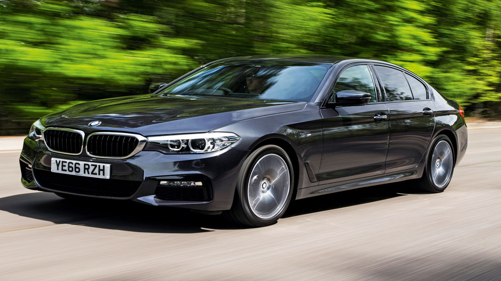
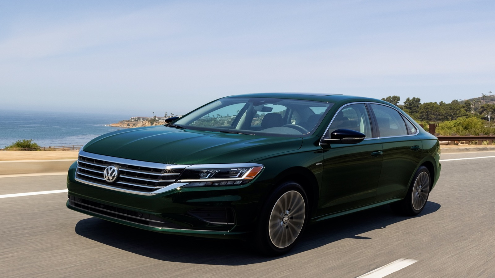

1 / 6

2 / 6
3 / 6
4 / 6

5 / 6
6 / 6

The county town of Carlow is 52 miles from Dublin, and it is surrounded by beautiful farmland and majestic mountains for as far as the eye can see. Carlow provides the ideal setting for anyone seeking to escape the hustle and bustle of the city. The modern attractions mix with the laid-back attitude in this rural town, which has a little bit of everything. Carlow is so old that it is thought to predate any recorded Irish history. Because more school leavers now have an incentive to stay, the opening of the Carlow Institute of Technology has contributed to the town's continuous population growth.Whether you plan to live in Carlow or simply visit, a rental car from Sparklow will make your stay more enjoyable.p>
You may find solutions to fit a variety of budgets with Sparklow's car rental in Carlow. Our rental car fleet caters to a wide range of travel needs, from a small family on vacation to a group of students on a summer trip. We have SUVs in a variety of sizes, ranging from modest 4x4s to huge SUVs. Our automobile rental service also offers tiny and intermediate saloons to meet your frequent travel demands. A people carrier is great if you need to rent a car for your family. We have seven and nine-passenger vans that will make any Carlow group excursion a sociable and enjoyable event. With our fleet's current and fuel-efficient features, you can rest assured that your car will not let you down.
The Greek revivalist style of the Carlow Courthouse, completed in 1830, is what makes it unique. It has a Russian cannon in front of it that was allegedly seized during the Crimean War. The courthouse, which resembles a temple on a plinth and has undergone various renovations over its history, is still a sight to behold. Duckett's Grove is a large estate with Gothic Revival architecture that is open to the public. It was erected in the 1800s. You can take a ride to the Graiguecullen Bridge, a five-arched stone bridge that is one of the oldest on the River Barrow, after you've decided on the car you wish to hire in Carlow.It's right next to Carlow Castle, another must-see attraction in the area. An attempt to redesign the old castle on the banks of the River Barrow failed miserably, leaving it in ruins, but that is a sight to behold in and of itself. Another place to visit is the Mount Leinster Heritage Drive, which runs for 47 miles and passes through lovely tiny villages and towns including Clonegal, Borris, Myshall, and Bagenalstown. You may enjoy the stunning views of the Blackstairs Mountains while driving.